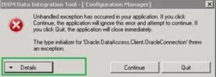

Configure ISSM Data Integration Tool
You must work with configurations based on a Banner Database and XML Source file.
Configurations based on a Banner Database
Use the configuration information tab for Banner database
Configuration information tab fields for Banner database
Set up the connection information for a Banner source
Reconnect to the Banner or fsaATLAS database
Connection information tab fields
Information on the Connection Information tab field names and buttons with their descriptions.
| Field/Button | Description |
|---|---|
| Banner Server Instance | Location of the Banner database. This is a required field. |
| Database Login User Name | Username for connecting to the Banner Oracle database. This is a required field. The default ISSM user for connecting to the Banner Oracle database is fsamgr. |
| Database Login Password | Password assigned to the above login name.This is a required field. This was created when the application was installed and scripts were run. By default, the password is u_pick_it. Enter this password or a different one if you changed the password. |
| Is Campus System MEP | Select the check box to enable MEP. |
| VPDI Code | Enter the unique code of the campus. VPDI code maintains data security, and you will be able to view the complete details of the student or scholar profile. |
| Connect button | Click this button to connect with the Banner database. When you successfully connect, information is retrieved from the database. If the connection is unsuccessful, an error message appears. |
| Refresh All Code Tables button | Click this button to re-connect with the Banner and fsaATLAS databases. This is useful if information changes within the databases (for example, Banner Visa Types or ISSM custom fields). |
Population selection tab fields
Information on the Population Selection tab fields and their description.
See Population Selection section in Banner General Use content on the Ellucian Documentation site for more information on the Population Selection.
| Field | Description |
|---|---|
| Application ID | Code for the application for which the selection is being defined. This is a required field. |
| Selection ID | Identifies the population selection, or set of rules, that selected the IDs. This is a required field. |
| Creator ID | Oracle ID of the user who created the population. This is a required field. |
| User ID | Oracle ID of the user who selects the population. Must be an ID that previously ran the extract to obtain a population. This is a required field. |
Determine the campus names
Examine your source data and make note of all the campuses. Search within the Campus Element Name tag referenced in the Configuration Information tab.
If, for example, you typed InstitutionDescr as the tag that references the campuses, you should look through the XML source file and note all campuses within this tag.
As ISSM has three Profile SubTypes, which are Student, Scholar, and Other, there should also be three entries for each campus to represent these Profile SubTypes.
For example:
If one of the campuses is YourUniversityName, then the following shows the campus entries and to which ISSM department they are mapped:
| Campus Description | ISSM Campus Department List |
|---|---|
| YourUniversityName-Student | International Student Office |
| YourUniversityName-Scholar | International Scholars Office |
| YourUniversityName-Other | Laura's Office (another office within the institution) |
campusnameis spelled exactly the same as the name in the source file and is case-sensitive.- Subtype is each of the Profile SubTypes available in ISSM: Student, Scholar, and Other.
- There are no spaces between the campusname, dash, and SubType.
Configurations based on an XML source file
Prepare to integrate your data for ISSM includes the process of configuring settings and scheduling the data extract. The result is an XML file that is compatible with the ISSM Campus DataLink system.
Mapped profile subtypes fields
Information on the field names, buttons and their descriptions for the Profile Subtypes fields.
| Field | Description |
|---|---|
| Visa Type | The value of VisaType element from source xml. Map the value with ISSM Profile Subtype (student or scholar). Based on this mapping the system generates Student or EV drop file. Configure the element value as F1 or F-1 or F_1. Enter the element values in the Visa Type field. Enter the visa types included in the XML file. This is a required field. |
| ISSM Profile SubType | SubTypes available in ISSM (for example, Student, Scholar, Other). This is a required field. |
<StudentEV campusId="campid1">
<Personal>
<Adm_Id>a</Adm_Id>
<StudentLastName>Sathis</StudentLastName>
<StudentFirstName>Kumar</StudentFirstName>
<StudentMiddleName>P</StudentMiddleName>
<StudentPreferredFirstName>SP</StudentPreferredFirstName>
<BirthDate>12/12/1900</BirthDate>
<Gender>M</Gender>
<VisaType>F1</VisaType>
<CollegeSchool>NFM</CollegeSchool>
<Campus>StudenDepartment</Campus>
<DegreeSought>a</DegreeSought>
<Dept>StudentDepartment</Dept>
</Personal>
</StudentEV>In the example above, <VisaType> is the Visa Type
Determine the campus names - map
Examine your source data and make note of all the campuses. Search within the Campus Element Name tag referenced in the Configuration Information tab.
If, for example, you typed InstitutionDescr as the tag that references the campuses, you should look through the XML source file and note all campuses within this tag.
As ISSM has three Profile SubTypes, which are Student, Scholar, and Other, there should also be three entries for each campus to represent these Profile SubTypes.
For example:
If one of the campuses is 'YourUniversityName', then the following shows the campus entries and to which ISSM department they are mapped:
| Campus Description | ISSM Campus Department List |
|---|---|
| YourUniversityName-Student | International Student Office |
| YourUniversityName-Scholar | International Scholars Office |
| YourUniversityName-Other | Laura's Office (another office within the institution) |
- campusname is spelled exactly the same as the name in the source file and is case-sensitive.
- subtype is each of the Profile SubTypes available in ISSM: Student, Scholar, and Other.
- There are no spaces between the campusname, dash, and subtype.
Use the configuration information tab for XML source
Use the Configuration Information tab to name the configuration, set the data source type, and enter the element names from the source XSD file.
Procedure
Configuration information tab fields for XML source
Information on the field name and its description. Enter the Name field to save the configuration.
| Field | Description |
|---|---|
| Configuration Name | Name of the configuration. This is a required field. The name can be up to fifty characters and must be unique (not used by any other configuration). Do not use the not valid characters referenced in Use the Configuration Information tab. |
| Source Type | Where the data is coming from. This is a required field. There are two choices:
|
| Last Edited | Displays the date and time the configuration was last edited. You cannot edit this information. |
The following fields are visible only when the XML Configuration Type is selected. All of these tags are required. The names are case-sensitive. Confirm that you have the correct spelling and case by examining the XSD file.
| Field | Description |
|---|---|
| Root Element Name | The root element of each record or the name used for student/scholar tag. This is a required field. |
| Campus Element Name | Name for the campus tag. Enter the Department element value from the destination XML and enter in this field. This is a required field. |
| CampusID Element Name | Name for the Campus ID tag. This is a required field. |
| AdminID Element Name | Name for the Admin ID tag. If you specify the Adm_Id in AdminID Element Name, the system gets the Adm_Id value from source xml to destination xml. Leave the field blank if you do not want to configure the field. |
<StudentEV campusId="campid1">
<Personal>
<Adm_Id>a</Adm_Id>
<StudentLastName>Student</StudentLastName>
<StudentFirstName>Student 1</StudentFirstName>
<StudentMiddleName>P</StudentMiddleName>
<StudentPreferredFirstName>SP</StudentPreferredFirstName>
<BirthDate>12/12/1900</BirthDate>
<Gender>M</Gender>
<VisaType>F1</VisaType>
<CollegeSchool>NFM</CollegeSchool>
<Campus>StudenDepartment</Campus>
<DegreeSought>a</DegreeSought>
<Dept>StudentDepartment</Dept>
</Personal>
</StudentEV>In the example above:
- <StudentEV> is the Root Element Name
- <Dept> is the Campus Element Name
- campusId is the CampusID Element Name
- <Adm_Id> is the AdminID Element Name
Schedule Tasks and Extract Data
Now that you have created a configuration with all of the necessary settings for preparing for extraction, you now need to communicate with the tool to begin extracting data.
The extraction is done by setting up a task for this configuration, then running this task. The result of a task is an XML file that is compatible with the ISSM Campus DataLink system, which is pushed over to ISSM. You can import data in ISSM using the Campus DataLink.
Set up the task scheduler
After you create the configuration, you can then schedule the task that runs the configuration.
About this task
From the Main tab, click  .
.
Procedure
Results
When you click Save, the username and password validates. If the specified user does not have permissions to run the task, then an error message appears. You cannot save or run the task without a valid system user name and password.
Edit a task
When editing an existing task, you need to reenter the password, and confirm the password.
About this task
You may not want to wait for a task to run when at its scheduled time. You can navigate to the Tasks folder and run the task manually:
Procedure
- Open Windows Explorer.
- To see the contents of the Tasks folder, click and, double-click Scheduled Tasks.
- Right-click the desired task and select Run.
Confirm that a task runs correctly
After a task is run, there are a few files that you may check to confirm that the configuration is set up properly and that the task scheduler is running with no errors.
The files are located in \fsaATLAS\DataIntegrationTool\LogFiles:
- Error.log: An entry is appended to the end of this file each time a task is run. Each task may have multiple entries. Therefore, each extract begins with a double row of asterisks.
Refer to Troubleshooting in the Maintain content for information on messages that may appear in the Error.log file.
- UnProcessedIndividuals.xml: Check the information below the configuration name. If there is no information listed under the section, then there were no errors.
Use Campus DataLink to import extracted data
Now that you have extracted the data, you can go to ISSM and examine/import the data in ISSM.
See Campus DataLink in the ISSM Install content on the Ellucian Documentation site about importing the information.
Troubleshooting
Troubleshooting steps to resolve any issues related to data conversions, Oracle Data Component and XML schema errors.
Troubleshoot data conversions
When importing Banner data, if certain pieces of information are missing, data cannot be imported. The information saves in two log files, Error.log and UnprocessedIndividuals.xml.
Review the following if you receive a message or have an issue when converting data from the Banner source to the ISSM Datalink file.
| Message or Issue | Reason |
|---|---|
| Birth Country Code Table name is empty, cannot Process Birth Country Code. | When the BannerTableName is empty in the IntegrationConfig file: When they do not select any table name (GOAINTL or SABSUPL) in the UI. |
| CampusID is not mapped, cannot continue processing. | The campusID does not map in the UI. |
| Object reference not set to an instance of an object. | If the referenced mapped field is LastName, FirstName, or MiddleName: These three fields are referenced in the UnprocessedIndividuals.xml file, but are not mapped in the configuration. You can ignore this message unless you did map these fields. In this case, you should confirm that the mapping was done correctly. |
| Response document received is null, cannot parse. | When the response xml document is null. |
| Xml document received from Parser is null, cannot filter. | When the response xml document sent to the filter module is null. |
| UnProcessedIndividuals.xml is empty, does not have default format. | Before writing DepartmentOwnerIDs, the UnProcessedIndividuals document is created with a default format. If for some reason, this file does not exist, this exception displays. |
| ISSM field ProfileType is not mapped. | The Profile Type does not map. |
| Character length of Foreign Address Line 1 is longer than 60 error message | Open the configuration and save it again after the upgrading DIT. |
| Manual building of the scheduled tasks in Windows task scheduler results in a non-uniform result. | You must login to DIT and reschedule all the configurations again on the ISSM Data Integration Tool - Task Scheduler window. |
| Warning: Could not connect to the Banner database. | Add the TNS_ADMIN in the Environment Variables. Perform the following steps to add the TNS_ADMIN, if you get the Warning message, even after providing the valid banner credentials.
|

Troubleshoot Oracle Data Access Component (ODAC)
To enable tracing on the ODP.NET (ODAC 12.2c R1), add the following code in fsaATLASDataIntegrationTool.exe.config or ExtractRunner.exe.config file.
About this task
- If you are troubleshooting ODAC while executing fsaATLASDataIntegrationTool.exe, edit fsaATLASDataIntegrationTool.exe.config.
- If you are troubleshooting ODAC while executing ExtractRunner.exe, edit ExtractRunner.exe.config.
Procedure
Results
In the above code snippet:
TraceFileLocation is the Trace file destination directory, for example, D:\traces. The default TraceFileLocation is <Windows user temporary folder>\ODP.NET\managed\trace.
TraceLevel: 1 = public APIs; 2 = private APIs; 4 = network APIs/data. These values can be combined using OR. To enable everything, set the TraceLevel to 7. Errors are always traced.
Troubleshooting XML schema errors
Before you begin
In the Data Link Manager, if you see the XML error XML Schema Validation Error. Error Message = The element ''Biographical'' has invalid child element ''VisaIssuingCntry'', the IntengrationConfig.xml must be modified.